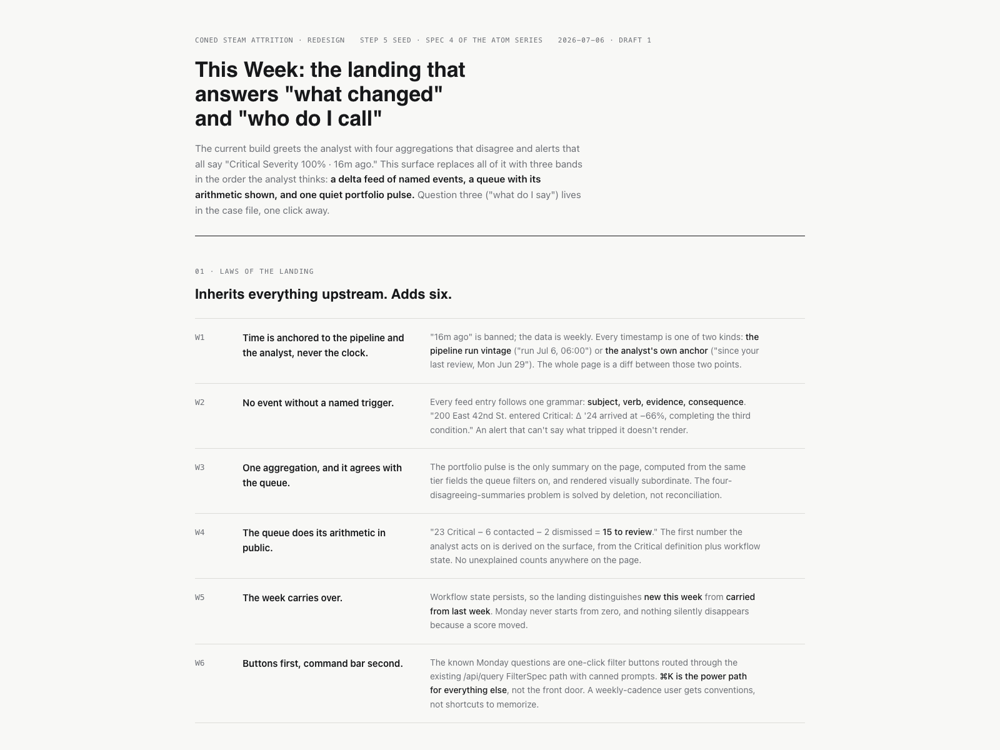
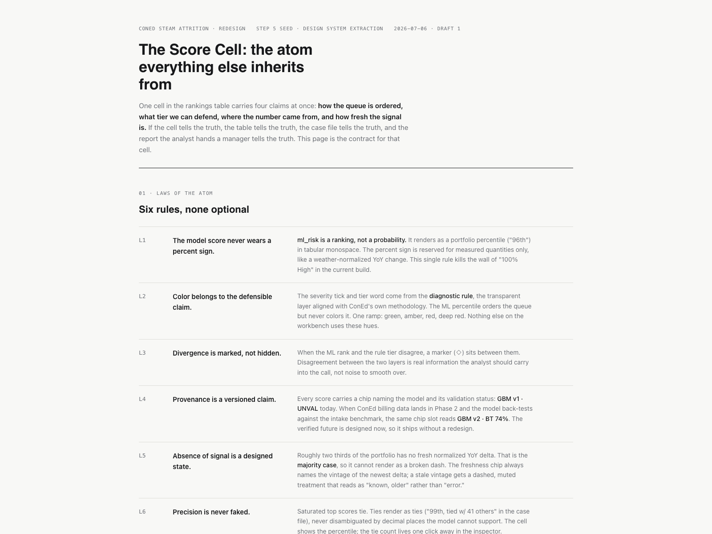
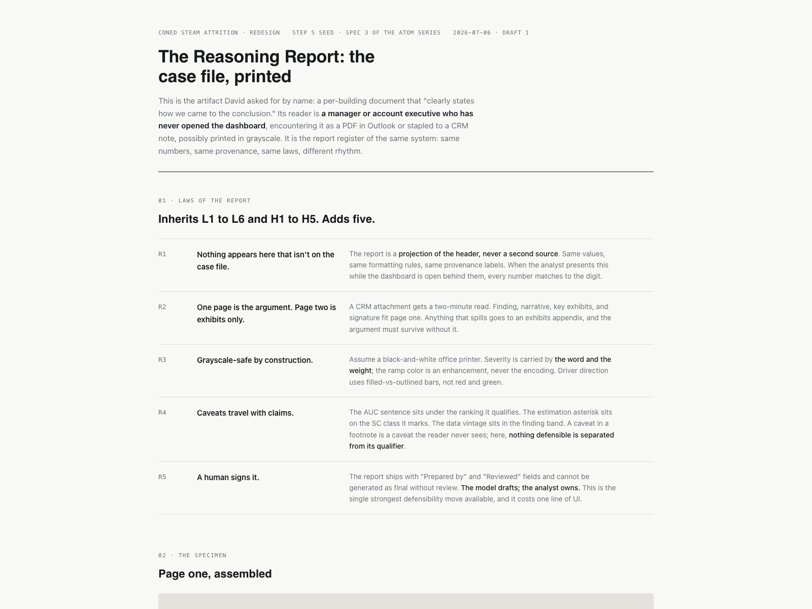
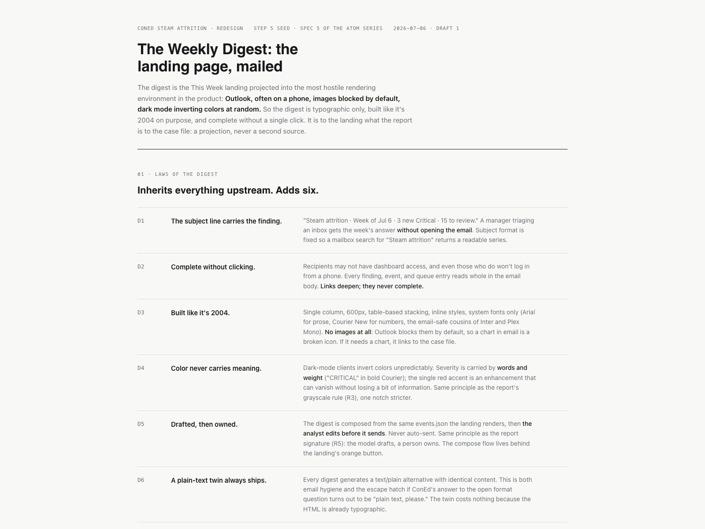

Pipeline ran July 6, 2026 at 6:00 AM
Buildings tracked 1,210
Model XGBoost — awaiting validation
ConEd Steam Attrition · Redesign Touchpoint
The steam
team's week
A workflow-first redesign of the attrition dashboard.
Today's build is preserved — the new build comes up alongside it, milestone by milestone.
Every number on screen shows where it came from and how confident we are.
Presenting
Ismael Caraballo
Backend · models · pipeline
Pedro Martins
Project Management
Design lead
Edwin Perez
On Slack today
Date
July 14, 2026
ConEd
ConEd Steam Attrition
Redesign Touchpoint
Slide 01 / 10
Update · what's shipped since last touchpoint
Live at the current dashboard on Railway
Since last touchpoint
Three engineering
ships, one design
spec locked.
Every ship is live on the current dashboard behind your login. The design spec is what shapes the rest of this walkthrough — a scoped plan, twelve milestones, each with acceptance criteria written down.
Shipped since last touchpoint
Early July
Local Law 97 compliance gaugesEvery building now shows emissions against both the 2024 cap and the 2030 cap — the compliance cliff is visible on one screen.
Early July
Model driver panelFor each building, the top five features driving its risk score, with directional arrows. Replaces the old static tooltip.
Early July
Predictions APIThe XGBoost model is now served through our API behind authentication. Also: a diagnostic tier filter in the ranked table.
Ongoing
Security hardeningFaster lookups, safer writes, guardrails on model fallback — nothing user-visible, everything more solid.
July 13
Design system spec lockedVoice, tokens, rules, and a twelve-milestone roadmap with acceptance criteria for each. Shape of everything that follows.
Ismael
What shipped since last touchpoint
Slide 02 / 10
The redesign · what changes, in three moves
Voice "Bloomberg Terminal that explains itself"
The redesign in one paragraph
The current build shows
a portfolio. The redesign
shows the team's week.
01 · The shift
From "the portfolio" to "this week's work."
The old dashboard opens on a ranked list of every building. The new one opens on what changed since Monday and what needs a call this week. Same data — reorganized around the analyst's day.
02 · The rule
Every number on screen shows its confidence.
You see who trained the model, when the data was refreshed, how many buildings support the claim. Direct answer to the "100% High" problem you raised last time — the tool has to be honest about what it doesn't know.
03 · The tier
The risk tier is a documented hybrid — not pure model, not pure rule.
The model sets a starting tier. Three checkable modifiers (an outlier decline, an accelerating decline, an over-cap building) can shift it up or down. Every surface names it that way so it's never presented as a black box.
Pedro
The redesign frame · one shift, one rule, one structure
Slide 03 / 10
Atom 1 of 4 · "This Week" landing page
Purpose what an analyst opens Monday morning
Atom 1 · Monday morning
This week,
on this queue.
The first page the steam team sees. Two dated anchors at the top (when the data ran, when you last reviewed), a feed of what changed and why it matters, and a priority queue the team can work through.
Design spec · this-week-landing

Fable · design partnerReady to build
1
Two anchors, no relative time.Pipeline ran July 6 · you reviewed June 30. Never "two hours ago" — always the actual date, so nobody wonders whether the number is fresh.
2
Every change names its trigger."New boiler permit filed at 660 Madison — check whether the emissions grade might drift." The feed tells the analyst what happened and what to do about it.
3
The priority queue is workflow-scale.Not "here are 1,210 buildings" — "here are the ones to look at this week." Portfolio-scale numbers live in one quiet corner. Explained in detail on the next slide.
4
Absence of fresh data is a designed state.Most buildings only have 2023 data or older. The page treats stale as normal, not as a bug — it's flagged clearly instead of hidden.
Pedro
"This Week" landing page — Monday morning
Slide 04 / 10
Priority queue · proposed definition · needs sign-off
As of pipeline run July 6, 2026
The priority queue — what's on it, and why
Three signals
have to agree.
The priority queue is what the steam team looks at first each week. A building lands on it only when all three signals fire — the model, the freshness of the data, and a trend flag. This is a proposed definition; we need your sign-off on the shape before we ship the weekly digest.
A building is a priority when all three are true
1
The model is confident this building is in the higher-risk group.XGBoost places it in its high-confidence set — the top ~57 buildings by score, cutoff 0.60.
AND
2
There's fresh 2024 steam data for the building.Not a stale record. If the most recent number is from 2023 or older, the building sits in a different queue with a "stale" label.
AND
3
At least one trend signal has fired.Either: the year-over-year decline is a statistical outlier (bigger than most buildings) — or the decline is accelerating (getting worse faster than it was).
On the queue right now
23
Buildings passing all three signals as of the July 6 pipeline run.
Top of queue
660 Madison Ave200 East 42nd Street58 West 58th Street
Verified against live data.
What we're asking
Is this the right shape? If the ConEd steam team wants a wider cut (drop the fresh-data leg), a tighter cut (add over-cap as a fourth leg), or different thresholds, the count changes with the definition. Sign-off is on the definition, not the number.
Note on Local Law 97
The over-cap flag is deliberately not a fourth leg. The model already uses the LL97 dollar penalty as its top feature (20% of the model's importance). Adding the over-cap flag on top would double-count the same signal.
Ismael
Priority queue · proposed definition · sign-off needed
Slide 05 / 10
Atom 2 of 4 · how one building's risk is shown
Purpose retire the "100% High" wall
Atom 2 · One building, one row
Rank, not a percent sign.
In the current build, 45 buildings all show 100% risk — which reads as "the model can't tell them apart." The new cell shows a ranking ("96th percentile") or, for a tied top block, "among the top 52 by model score." Never a percent sign on the score itself.
Design spec · score-cell-anatomy

Fable · design partnerReady to build
1
Rank in the distribution, never a percent."96th percentile" for most buildings — "among the top 52 by model score" for the tied top block. The number is a rank, not a probability.
2
The provenance chip names the model.Reads "XGBoost, awaiting validation." The model's ranking accuracy number lives only on the case file and the methodology page — not on the score cell itself.
3
"Awaiting validation" until we back-test.Against ConEd's actual disconnect records. That's your data — the label stays honest until we get access to it.
4
Four named freshness states.Fresh 2024 delta · Latest 2023 only · No adjacent-year delta · Uncertain. Stale is the majority case — the design treats it that way.
Pedro
Score cell · how one building's risk is shown
Slide 06 / 10
Atom 3 of 4 · the case file & the printable report
Purpose the deep dive on one building
Atom 3 · Digging in on one building
Every claim
shows its math.
Click a priority-queue row and you get a case file — a ledger, not a splash screen. Three columns: where the building sits in the queue, why it's in the tier it's in, and how much data supports the claim. There's a printable version for sharing with operations.
Design spec · reasoning-report

Fable · design partnerReady to build
1
The model's driver breakdown, restructured as evidence.Same top-5 drivers you see on the current dashboard — but with real-unit values (dollar penalty, decline percentage) and directional arrows on each.
2
Print-safe by construction.Renders clean in grayscale — print it, scan it, still readable. The report is designed to leave the tool, not just live inside it.
3
The tier chain is written out verbatim.Not just "Critical" — but "Critical, because base tier from model = High, plus outlier decline (+1)." Full derivation, every time.
4
A human signs it. The tool doesn't ship a report on its own.Every reasoning report requires an analyst's name on it before it leaves the system. The strongest defensibility feature we have — the tool triages; the human confirms.
Pedro · Ismael on the tier chain
Case file & printable reasoning report
Slide 07 / 10
Atom 4 of 4 · the weekly email
Purpose how the finding leaves the tool
Atom 4 · The Monday email
Readable without a click.
Every Monday, the digest arrives in the distribution list's inbox. The subject line carries the finding. The body is complete without opening the app. A plain-text version ships alongside every HTML draft, in case a recipient's client can't render it.
Design spec · weekly-digest-email

Fable · design partnerReady to build
1
The subject line names the finding."23 buildings entered the priority queue this week — top: 660 Madison." The recipient can act on the inbox preview alone.
2
The body is a complete finding, not a teaser.No "log in to see more." The email carries the queue count, the top buildings, and the top three changes — everything the recipient needs to know without opening the tool.
3
Numbers come from the data, never freehand.The compose UI lets the analyst edit the copy — but the numbers are pulled from the pipeline. No one can type "24 buildings" if it was 23.
4
Sent from the analyst's own mail client.The tool composes the draft and hands it off to the client (or the clipboard). Nothing goes out from us in this first version — the analyst is on the send button.
Pedro
Weekly digest — how the finding leaves the tool
Slide 08 / 10
Response · to the methodology alignment doc, June 2026
Full analysis in the repo
Methodology response — item by item
Five items.
Two ship now. Three are next round, with reasons.
A written response to the alignment document the ConEd team sent in June. Full text is in the repo (CONED_METHODOLOGY_ALIGNMENT.md) and the handout summarizes it. The dedicated methodology page ships as part of the redesign.
#
Item
What ships now
Next round
01
Per-customer weather-normalized regression
The NYCHA regression across 24 developments — shipped as the proof of method. Portfolio-wide, we're using citywide heating degree days as a documented weakness.
Waits on billing-cycle data access from ConEd
02
A six-metric diagnostic suite
Two of the six are already surfacing in the case file (decline trend label, regression fit where present).
Waits on item 01
03
"Uncertain" tier aligned with regression fit
Partial: where the NYCHA regression exists, we use its fit as the gate. Elsewhere we use a years-of-data gate.
Extends portfolio-wide when item 01 lands
04
Rule-based tier assignment with empirical thresholds
Our version is a hybrid — the model sets the base, three checkable modifiers can shift it. The chain is written verbatim on every surface, so it's never presented as opaque.
A fully learned tier assignment explored
05
Position both approaches as complementary signals
Ships now — the methodology page and the report method footer both frame it this way.
Pattern-mining explored as a research track
Ismael
Methodology alignment · point-by-point
Slide 09 / 10
What we need from ConEd · answers async, this week
Next touchpoint [to schedule]
What we need from ConEd · what ships next
Seven questions.
Any answer moves us forward.
These are the decisions we need from the ConEd steam and methodology teams. All can be answered by email or Slack this week — no need to resolve them in the room.
Question 1
Sign-off on the priority queue definition — the three-signal filter behind the 23 buildings.
Ismael signed internally. Ready when ConEd is.
Question 2
Chip vocabulary — is "XGBoost, awaiting validation" the right phrasing?
Or would the team prefer something else? "Not yet validated"? "Provisional"?
Question 3
Weekly digest — cadence, recipient list, format.
Weekly? Who receives? HTML plus plain-text, or plain-text only?
Question 4
Cooling-off window — how long after "Contacted" before a building resurfaces?
A week? A month? Different by building type?
Question 5
Territory gating — do different recipients see different building subsets?
Or does everyone on the list see the full portfolio?
Question 6
Reports — a DRAFT watermark, or a hard gate?
Watermark means drafts can be sent, marked as drafts. Hard gate means only reviewed reports leave the tool. We recommend the watermark.
Question 7 · Methodology
Anything in the "next round" column that you'd want promoted to "now"?
Named with the trade-off — if there's an item that matters more than the ordering suggests, we'd like to hear it.
What ships between now and next touchpoint
Today's dashboard preserved at /legacy. One truth for model version + validation status. The model's ranking accuracy rerun with proper statistics. The score cell atom, live on the ranked table.
On the priority queue
23
Buildings today · signed internally
Ships next
4
Milestones between now and next touchpoint
Contact
Edwin Perez — design, methodology
edwin.perez@pursuit.org
Ismael Caraballo — backend, models
ismael.caraballo@pursuit.org
Pedro Martins — project management
pedro.martins@gmail.com
edwin.perez@pursuit.org
Ismael Caraballo — backend, models
ismael.caraballo@pursuit.org
Pedro Martins — project management
pedro.martins@gmail.com
Ismael & Pedro
Thanks · questions?
Slide 10 / 10